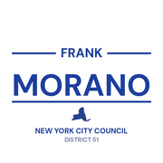
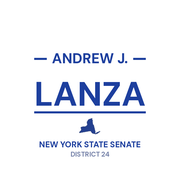

The district
 City Council
City Council State Senate
State Senate Congress
Congress Subway
Subway Citi Bike
Citi Bike NYC Ferry
NYC FerryTurn layers on and off. Tap an official's logo or a board's seal for its page. Zoning and land use lot by lot are on the land use map.
About
Assembly Member Michael Reilly represents State Assembly District 62. It sits in Staten Island.
The district overlaps community boards Staten Island 2 and Staten Island 3.
It is policed by the 121st, 122nd and 123rd Precincts.
It overlaps council districts 50 and 51 and Senate district 24.
Members of the State Assembly serve two year terms.
Next on the ballot in November 2026. Find your poll site and sample ballot there, or see what is coming up on the calendar.
Assembly District 62 in numbers
U.S. Census Bureau, American Community Survey 2019-2023 5-year estimates.
Bills
Committees
Contact
Overlap
Community boards


Bars show how many of the district's election districts fall in each board.
Overlapping elected officials




| Staten Island CB 3 | 93% of the assembly district | 88% of it |
| Staten Island CB 2 | 7% of the assembly district | 7% of it |
| 123 Precinct | 81% of the assembly district | 100% of it |
| 122 Precinct | 13% of the assembly district | 17% of it |
| 121 Precinct | 5% of the assembly district | 7% of it |
| Sector 123C | 32% of the assembly district | 100% of it |
| Sector 123A | 31% of the assembly district | 100% of it |
| Sector 123B | 18% of the assembly district | 100% of it |
| Sector 122A | 13% of the assembly district | 37% of it |
| Sector 121D | 5% of the assembly district | 24% of it |
| School District 31 | 99% of the assembly district | 35% of it |
| Council District 51 | 90% of the assembly district | 77% of it |
| Council District 50 | 10% of the assembly district | 9% of it |
| Senate District 24 | 100% of the assembly district | 44% of it |